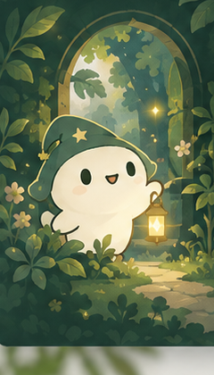

質問する人
「雨の日に使うもの？」
答えを聞いたら、次の一問へ。
わかったら「答えがわかった」で宣言。
 FINEPLAY
FINEPLAY誰かが決めた答えを、みんなの質問で当てる。
「それ、いい質問！」にはFinePlay。
いつもの通話に、ひとつの謎を。
登録も、相手を待つ必要もなし。質問する側から試せます。
練習は台本の相手が自動進行。本番で答えるのは友達です。

出題者は、答えをひとつ秘密にする。
ほかのみんなは質問を重ねて、絞り込む。
「雨の日に使うもの？」
答えを聞いたら、次の一問へ。
わかったら「答えがわかった」で宣言。
自分だけが知っている答えについて、
6択で回答。解答宣言が来たら正誤判定。
いい質問には、あなたもFinePlay。
質問数が卓全体のスコア。FinePlayは、ほかの人の名質問への拍手です。
質問・回答は履歴で見返せます。声は文字起こししないので、質問文を残すときだけ短いメモを。
ひとり体験を終えたら、そのまま本番へ。
体験なしで始めても大丈夫。
Discordなどで通話をつなぎ、1人が名前を入れて「部屋をつくる」。
作成者が「招待URLをコピー」して仲間へ。参加者はそのリンクを開き、名前を入れる。
出題者とお題の範囲を決め、作成者が「このメンバーで始める」。答えは出題者だけの秘密に。
招待された人は、友達から届いた部屋の招待URLへ。
この紹介ページのURLと、みんなで集まる部屋のURLは別です。
練習の質問と相手の応答は台本です。質問する側は用意された質問を選び、答える側は届いた質問に6択で回答。どちらも正解まで試せます。本番は友達同士が声で自由に質問し、出題者が答えます。質問メモは任意。AIが文章を解釈して回答する機能はありません。
「それ、いい切り口！」と思ったら、回答済みの質問にある手のボタンで合図。他の人の質問に1人1票、押し直すと取り消せます。自分の投稿には付けられません。他の人の解答宣言と問題にも付けられます。質問数とは別の表彰です。
作成者の元のタブと回線を確認し、ゲームの「再接続」を試してください。接続できない場合は通常のブラウザで開き直します。作成者の自動交代はありません。うまくいかなければゲーム内の「感想・不具合」から状況をコピーし、紹介してくれた人へ。自動送信はしません。